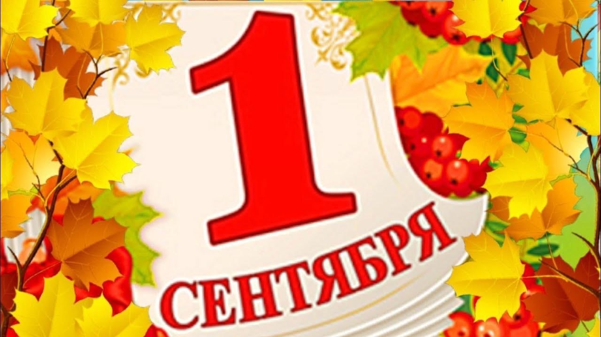
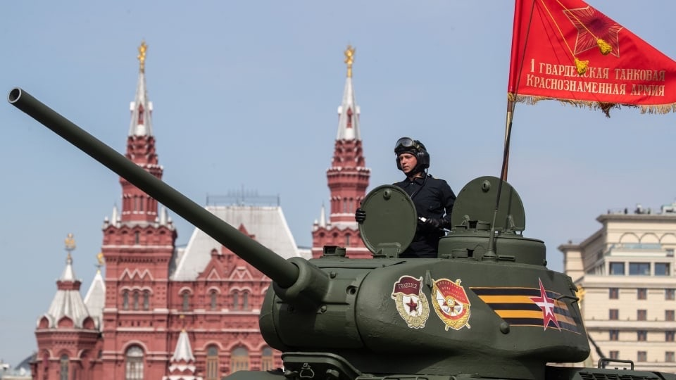
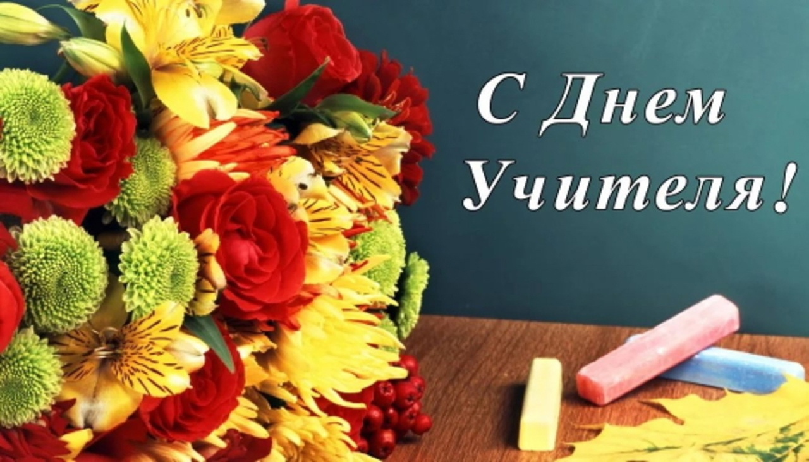
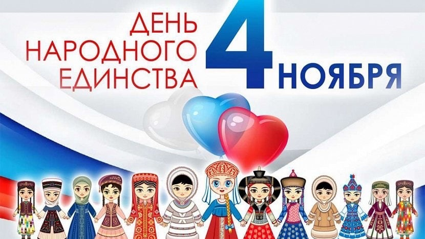
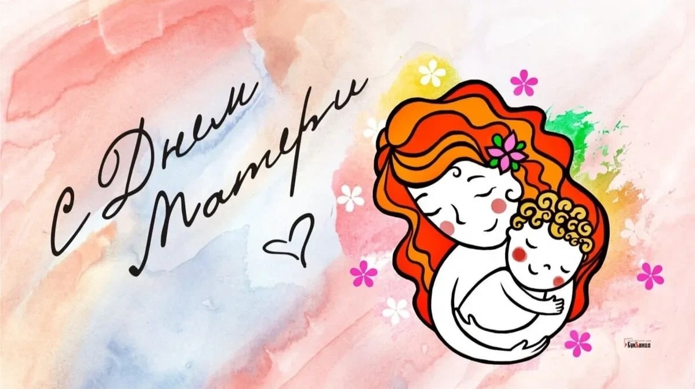

Осенние праздники издревле на Руси отмечались с большим размахом – природа дарила урожай и это надо было отпраздновать. В наши дни на прилавках магазинов и рынков круглый год – богатый урожай и как бы этот повод повеселиться не актуален. Но традиции наших предков надо знать.
Сентябрь — как-то незаметно украдкой подошла осень. Нельзя сказать, что ее не ждали. После долгого сезона роста, к приходу осени, природа запыхалась.
· День знаний - 1 сентября
День знаний — это первые звонки в школе и волнения, море цветов и белых бантов, и, конечно, традиционные уроки мира. Это самый долгожданный день для тех, кто впервые переступит школьный порог.

· День танкиста - 10 сентября
Учитывая особо важное значение танковых и механизированных войск и их выдающиеся заслуги в Великой Отечественной войне, а также заслуги танкостроителей в оснащении Вооруженных сил бронетанковой техникой, установить ежегодный праздник - День танкистов.

Октябрь - наступает самая яркая пора осени – золотая осень. Деревья, прежде чем погрузиться в долгий сон, накидывают золотые одежки из стремительно желтеющих листьев.
· День учителя - 5 октября
Это профессиональный праздник всех учителей, преподавателей и работников сферы образования — день, в который отмечаются роль и заслуги учителей в процессе качественного образования на всех уровнях, а также их неоценимый вклад в развитие общества.

Ноябрь - все молчаливей и грустней становится осень. Пришла пора для поздней осени – месяц ноябрь. Совсем редко стало появляться солнце. Кучевые облака на небе сменила тусклая серая пленка.
· День народного единства - 4 ноября
В этот день по всей стране проходят праздничные гуляния, концерты и представления. Но главные мероприятия, посвященные Дню народного единства, проходят в сердце праздника — Нижнем Новгороде, и на Красной площади в Москве.

· День матери - 26 ноября
День матери — международный праздник в честь матерей. В этот день принято поздравлять матерей и беременных женщин. Цель праздника — поддержать традиции бережного отношения к женщине, закрепить семейные устои, особо отметить значение в нашей жизни главного человека — матери.